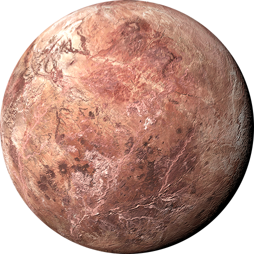

MAKEMAKE

Scoperto nel marzo 2005, Makemake è il secondo pianeta nano più lontano dal Sole. È anche il terzo pianeta nano più grande, solo leggermente più piccolo e meno luminoso di Plutone.
La superficie di Makemake è ricoperta da grandi quantità di ghiaccio di metano quasi puro, che fa apparire il pianeta nano di colore bruno-rossastro.
Senza lune rilevate e senza variazioni nella sua luminosità, è difficile determinare la massa, la densità o il periodo di rotazione di Makemake.